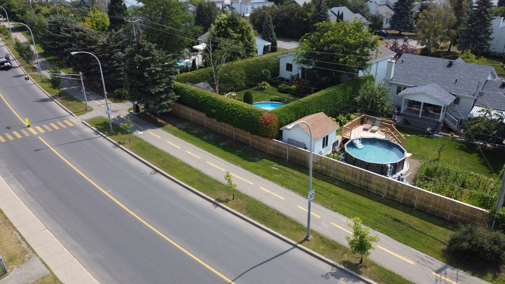
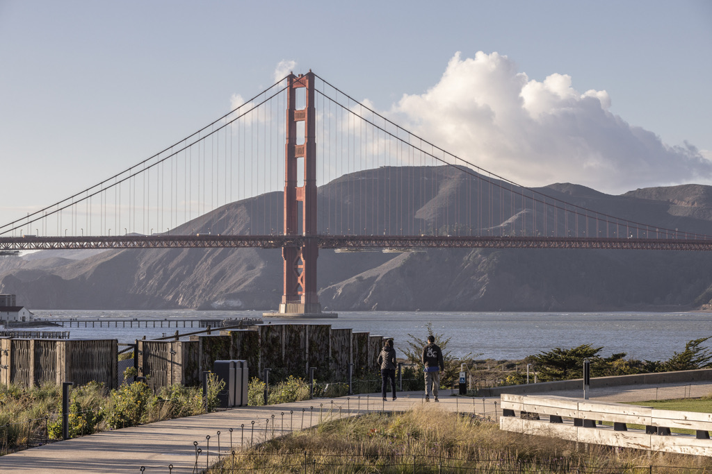

L'accent nature
de votre projet.
Saules cultivés au Québec et panneaux fabriqués au Québec depuis 2006. Écrans d'intimité naturels avec une finition écorcée contemporaine.
L'écran d'intimité 100% naturel.
Les clôtures en saule de Ramo offrent une alternative naturelle, durable et esthétique aux clôtures conventionnelles.
Les panneaux standards mesurent 6 pieds de hauteur par 5 pieds de largeur et du sur mesure est possible pour les projets d'envergure. Leur texture organique et leur patine naturelle s'intègrent à tous les environnements.
Ramo ne vend pas directement aux particuliers. Nos clôtures sont distribuées via un réseau de partenaires.
L'équipe Ramo mise sur la culture du saule et l'économie circulaire. Les clôtures sont distribuées via notre réseau de partenaires — contactez-nous pour être orienté.
Spécifications — Panneau standard.
Conçues pour les projets de caractère.
Développements immobiliers
Écrans d'intimité pour projets résidentiels et commerciaux haut de gamme.
Jardins privés
Délimitation naturelle et esthétique pour espaces résidentiels.
Terrasses & patios
Intimité et ambiance naturelle pour espaces extérieurs de vie.
Clôtures de piscine
Solution conforme et naturelle pour les enceintes de piscine.
Terrains sportifs
Protection visuelle et acoustique autour des courts et terrains de jeu.
Tout ce qu'on nous demande sur les clôtures.
Quelles sont les dimensions des panneaux ?
La largeur standard est de 5 pieds, et les panneaux peuvent facilement être raccourcis au besoin. Sur mesure, il est possible de fabriquer des largeurs jusqu'à 8 pieds. La hauteur standard est de 6 pieds, jusqu'à 11,5 pieds sur mesure. Au-delà, on peut superposer les panneaux. L'épaisseur des panneaux est d'environ 5 pouces.
Où puis-je obtenir le prix des clôtures en saule ?
Consultez la liste de nos installateurs-distributeurs par région et contactez-les pour obtenir une soumission adaptée à votre projet.
Ramo s'occupe-t-il de l'installation ?
Ramo n'offre pas de services d'installation directement. Cela dit, l'installation est simple et peut être réalisée par un entrepreneur général ou un installateur-distributeur partenaire. Le guide d'installation est disponible sur demande.
Le bois de saule est-il moins durable que le bois de clôture traditionnel ?
Le saule n'est pas reconnu pour avoir une grande durabilité naturelle comme le cèdre ou le chêne. L'ennemi premier du bois est l'humidité, et c'est pour cette raison que Ramo applique les meilleures pratiques de conception : couvert métallique protecteur sur le dessus, minimisation des contacts entre pièces de bois, conception qui évacue l'humidité, composantes structurales en acier galvanisé, intégration de plantes grimpantes pour réduire la dégradation par UV et pluie.
De plus, notre procédé d'écorçage unique donne au saule une surface extrêmement lisse, ce qui rend très difficile la pénétration de l'eau (contrairement à un bois scié ou écorcé par procédé abrasif). Enfin, les tiges sont tressées mécaniquement sans attaches ni fixations, ce qui limite les points d'entrée de l'humidité.
Les saules sont-ils cultivés au Canada ?
Oui. Ramo cultive ses saules au Québec depuis 2006 dans une démarche d'économie circulaire et d'approvisionnement local. C'est l'un des piliers de notre engagement environnemental.
Quel entretien est nécessaire ?
Aucun entretien n'est requis. Le saule grisonne naturellement avec le temps sans perte de qualité structurelle. Une inspection visuelle périodique suffit pour évaluer l'état du matériau.
Les clôtures résistent-elles aux hivers canadiens ?
Oui. Le saule tressé est naturellement résistant aux cycles gel-dégel. Nos panneaux sont conçus et testés pour les conditions climatiques rigoureuses du Québec et de l'Amérique du Nord.
Ramo vend-il directement aux particuliers ?
Non. Nos clôtures sont distribuées via un réseau de partenaires au Québec — centres jardins, cours à bois et spécialistes en aménagement paysager. Contactez-nous pour être orienté vers le distributeur le plus proche de votre projet.





Études de cas.
Projets livrés au Québec — clôtures en saule tressé en contexte résidentiel et urbain.
Un projet immobilier ou paysager ?
Notre équipe vous oriente vers le distributeur le plus proche ou accompagne directement les promoteurs et bureaux d'architectes.